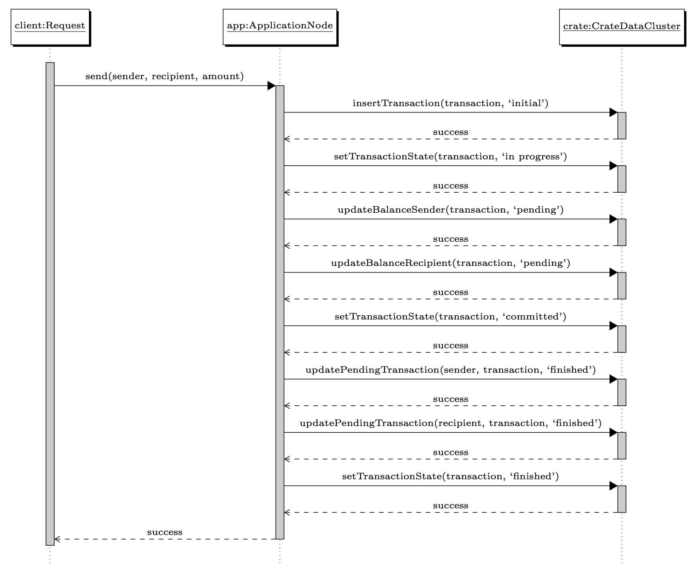

Transaction System¶
This prototype safely processes a user transaction in a shared nothing environment, where no centralised transaction manager is required. This is achieved by the append-only technique in combination with a suitable data model and a multi-phase commit protocol. Once a transaction is persisted in the transactions table, it can always be repaired.
The Theory Behind¶
Append-Only¶
The “append-only” technique does not perform in-place updates, but adds new data only. For instance, take a counter which gets incremented by several concurrent clients.
Each increment operation can be represented by one record. As Bailis and Ghodsi described in their work “Eventual Consistency Today: Limitations, Extensions, and Beyond”[BG13], one could use a list of some sort and add (append) an element to that list for every counter increment. “[...] the current counter status is represented as the count of distinct increment invocations, similar to how counting is introduced at the grade-school level: by making a tally mark for every increment then summing the total.”
Using Crate Data, or any database which has tables for that matter, one can simply INSERT a value for every counter increment. Depending on the increment operation, the value can be any arbitrary number. Summing all stored values in that table yields the total number of increments. Using SQL, this can be done by performing a SELECT with the SUM() aggregation.
Data model¶
-- SQL dialect: Crate Data 0.38.7
CREATE TABLE users (
id string PRIMARY KEY,
nickname string PRIMARY KEY
);
-- SQL dialect: Crate Data 0.38.7
CREATE TABLE transactions (
id string PRIMARY KEY,
sender string PRIMARY KEY,
recipient string,
amount double,
state string,
"timestamp" timestamp
) CLUSTERED BY (sender);
-- SQL dialect: Crate Data 0.38.7
CREATE TABLE user_transactions (
id string,
user_id string PRIMARY KEY,
transaction_id string PRIMARY KEY,
amount double PRIMARY KEY,
"timestamp" timestamp,
state string
) PARTITIONED BY (user_id);
Multi-Phase Commit Protocol¶
The multi-phase commit protocol (MPC) used in this work is very similar to a usual 2PC. Usually, a 2PC comprises a coordinator and many client nodes (i.e. cohorts). The coordinator initiates the protocol and decides whether to commit or abort a transaction. In the first phase (also called “commit request phase” or “voting phase”) the coordinator sends a “query to commit” message to all clients. All clients execute the transaction locally up to the point where they will be asked to commit. All clients reply with a “voting” message (which can be either “success” or “abort”). The coordinator decides whether to proceed by committing or aborting the transaction. If one cohort replies with abort, the transaction will be aborted. If all clients agree (i.e. all reply with success), the transaction will be committed [Wik14] .
The MPC used in this work differs in three major parts. An application node is not connected with any other application node. An application node communicates with the Crate Data cluster (and the load balancer) only. A newly issued transaction by a user is redirected by the proxy to one application only (an issued transaction is never handled by many multiple application nodes at the same time). Therefore, an application node serves as coordinator, and the Crate Data cluster is its client (i.e. cohort). Several steps using SQL queries are performed to transfer the transaction amount from one user balance to another user balance. The result of a SQL query is equivalent to the “voting” message. A success or failure of a step is considered to be a success or abort message, respectively.
The second major difference is the handling of abort messages. In the case that the Crate Data cluster returns an error (i.e. abort message), the transaction is left as it is. It will not be cleaned up immediately, but will be repaired by a later process. This can be done, because each record involved in a transaction has a state indicating if the particular record is allowed to be used in any further operations (i.e. calculating a user its balance).
The third major difference is the division of the phases. The MPC still consists of two phases, but while the first phase only guarantees that the issued transaction is recorded, the second phase does all the heavy work and performs all further steps which are necessary. The first phase is described through State: Initial, the second phase is described through sections State: Initial, State: In Progress, State: Committed, and State: Finished.
Definition of a User Transaction¶
A transaction is split into four states; “initial”, “in progress”, “committed”, and “finished”. Each state of a transaction is transitioned by one ore more steps which are performed using the MPC protocol. The states can be furthermore described as follows:
- State “initial” indicates that a transaction has successfully been issued by a user, and is guaranteed to eventually be finished or dropped.
- State “in progress” indicates that a transaction is being processed.
- State “committed” indicates that the balance has been updated on both, the sender and recipients its account.
- State finished indicates that a transaction is finished and the updated balance of both participants can safely be used.
Once a transaction is issued, it is considered as finished if, and only if, the transaction its state is marked as finished.
Transfer balance from one user to another¶
Assume there are two users, ‘elon_musk’ and ‘nikola_tesla’. The user ‘elon_musk’ wants to transfer 1000 of his balance to ‘nikola_tesla’. Each user has a unique id, which for the sake of simplicity in this example is a simplified number. In the prototype the id is the SHA-1 sum of the nickname, but any other method to generate a user id which sufficiently guarantees uniqueness can be used.
| users | |
|---|---|
| id | nickname |
| 10 | elon_musk |
| 11 | nikola_tesla |
The different states of a transaction¶
State: Initial¶
The user ‘elon_musk’ wants to transfer 1000 of his balance to ‘nikola_tesla’.
| transactions | |||||
|---|---|---|---|---|---|
| id | sender | recipient | amount | state | timestamp |
| 47 | 10 | 11 | 1000 | “initial” | ... |
The transaction is recorded in the system. The first phase of the MPC is done. A user can be sure that the transaction is getting processed eventually.
Note
The timestamp is merely for documentation purposes. It does not get updated nor is it used by any other operation.
State: In Progress¶
The second phase of the MPC starts. The transaction is marked as “in progress”.
| transactions | |||||
|---|---|---|---|---|---|
| id | sender | recipient | amount | state | timestamp |
| 47 | 10 | 11 | 1000 | “in progress” | ... |
After the transaction is marked as “in progress”, the amount can be transferred from one user to another. Using the ‘append only’-technique, adding or removing balance from a user account is done by inserting a record into the user_transactions table.
As a result, a record with amount * (-1) and amount * 1 is added for the sender and recipient respectively. Both records are marked as “pending”.
| user_transactions | |||||
|---|---|---|---|---|---|
| id | user_id | transaction_id | amount | timestamp | state |
| 1338 | 1 | 47 | -1000 | ... | “pending” |
| 4711 | 2 | 47 | 1000 | ... | “pending” |
Note
Each record is inserted by a single operation which is indicated by the timestamp.
Note
As already noted in State: Initial, the timestamp is merely for documentation purposes. It does not get updated nor is it used by any other operation.
State: Committed¶
The transaction can now be marked as “committed”.
| transactions | |||||
|---|---|---|---|---|---|
| id | sender | recipient | amount | state | timestamp |
| 47 | 10 | 11 | 1000 | “committed” | ... |
Note
This is not an essential step for a successful transaction and one could implement a similar transaction system without such a step. It is merely an optimisation. When a transaction failed and a process tries to repair (e.g. finish) the transaction, the process does not need to check if the user_transactions is updated already. This saves additional SQL queries for each transaction. The process can simply continue with step 5.
The records in user_transactions can now be marked as “finished”.
| user_transactions | |||||
|---|---|---|---|---|---|
| id | user_id | transaction_id | amount | timestamp | state |
| 1338 | 10 | 47 | -1000 | ... | “finished” |
| 4711 | 11 | 47 | 1000 | ... | “finished” |
Note
Similar as noted in State: In Progress, each record is update by a single operation.
State: Finished¶
The final step updates the transaction once again marking it as “finished”.
| transactions | |||||
|---|---|---|---|---|---|
| id | sender | recipient | amount | state | timestamp |
| 47 | 10 | 11 | 1000 | “finished” | ... |
Sequence Diagram¶
The following figure illustrates all previously described “states” required to process a successful transaction. A client issues a new transaction by sending a request. For the sake of simplicity, some parts are neglected. That is, the load balancer - the request is handled by an application node directly - and the initial checks if both users exist and the sender has a sufficiently high enough balance.
{kind=link}
Calculating the Current User Balance¶
-- SQL dialect: PostgreSQL 9.3, because Crate Data does not support JOIN
SELECT sum(ut.amount)
FROM user_transcation AS ut
JOIN transactions AS t
ON t.id = ut.transaction_id
WHERE t.state = 'finished'
AND ut.state = 'finished'
AND ut.user_id = '11' -- or any other user_id